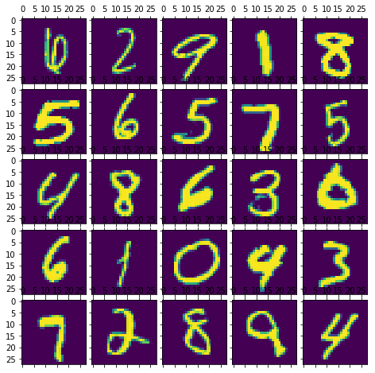
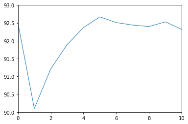
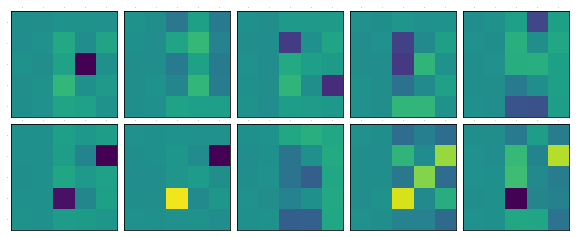
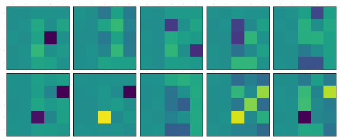

this is a work in progress
from __future__ import print_function
import argparse
import torch
import torch.nn as nn
import torch.nn.functional as F
import torch.optim as optim
from torchvision import datasets, transforms
from torch.autograd import Variable
class Args:
pass
args = Args()
args.batch_size = 12
args.cuda = True
args.lr = 0.001
args.momentum = 0.01
args.epochs = 10
args.log_interval = 10
kwargs = {'num_workers': 1, 'pin_memory': True} if args.cuda else {}
train_loader = torch.utils.data.DataLoader(
datasets.MNIST('../data', train=True, download=True,
transform=transforms.Compose([
transforms.ToTensor(),
transforms.Normalize((0.1307,), (0.3081,))
])),
batch_size=args.batch_size, shuffle=True, **kwargs)
test_loader = torch.utils.data.DataLoader(
datasets.MNIST('../data', train=False,
transform=transforms.Compose([
transforms.ToTensor(),
transforms.Normalize((0.1307,), (0.3081,))
])),
batch_size=args.batch_size, shuffle=True, **kwargs)
Lets take a look into how the dataset looks like
import matplotlib.pyplot as plt
from mpl_toolkits.axes_grid1 import ImageGrid
from PIL import Image
import pprint
import numpy
num_of_samples = 5
fig = plt.figure(1,(8., 8.))
grid = ImageGrid(fig, 111,
nrows_ncols=(num_of_samples, num_of_samples),
axes_pad=0.1)
output = numpy.zeros(num_of_samples ** 2)
for i, (data, target) in enumerate(test_loader):
if i < 1: #dirty trick to take just one sample
for j in range(num_of_samples ** 2):
grid[j].matshow(Image.fromarray(data[j][0].numpy()))
output[j] = target[j]
else:
break
output = output.reshape(num_of_samples, num_of_sample)
plt.show()
[[ 6. 9. 9. 5. 4.]
[ 3. 6. 5. 0. 1.]
[ 8. 1. 3. 6. 2.]
[ 9. 4. 8. 8. 6.]
[ 0. 6. 4. 2. 3.]]

You can see that the image of number <> is associated with number <>. It is a list of (image of number, number). As usual we are gonna feed the neural network with image from the left and its label from the right. We will train a set of feedforward networks in increasing order of complexity. What I mean by complexity is the number of neurons and number of layers.
class Model0(nn.Module):
def __init__(self):
super(Model0, self).__init__()
self.output_layer = nn.Linear(28*28, 10)
def forward(self, x):
x = self.output_layer(x)
return F.log_softmax(x)
class Model1(nn.Module):
def __init__(self):
super(Model1, self).__init__()
self.input_layer = nn.Linear(28*28, 5)
self.output_layer = nn.Linear(5, 10)
def forward(self, x):
x = self.input_layer(x)
x = self.output_layer(x)
return F.log_softmax(x)
class Model2(nn.Module):
def __init__(self):
super(Model2, self).__init__()
self.input_layer = nn.Linear(28*28, 6)
self.output_layer = nn.Linear(6, 10)
def forward(self, x):
x = self.input_layer(x)
x = self.output_layer(x)
return F.log_softmax(x)
class Model3(nn.Module):
def __init__(self):
super(Model3, self).__init__()
self.input_layer = nn.Linear(28*28, 7)
self.output_layer = nn.Linear(7, 10)
def forward(self, x):
x = self.input_layer(x)
x = self.output_layer(x)
return F.log_softmax(x)
class Model4(nn.Module):
def __init__(self):
super(Model4, self).__init__()
self.input_layer = nn.Linear(28*28, 8)
self.output_layer = nn.Linear(8, 10)
def forward(self, x):
x = self.input_layer(x)
x = self.output_layer(x)
return F.log_softmax(x)
class Model5(nn.Module):
def __init__(self):
super(Model5, self).__init__()
self.input_layer = nn.Linear(28*28, 9)
self.output_layer = nn.Linear(9, 10)
def forward(self, x):
x = self.input_layer(x)
x = self.output_layer(x)
return F.log_softmax(x)
class Model6(nn.Module):
def __init__(self):
super(Model6, self).__init__()
self.input_layer = nn.Linear(28*28, 10)
self.output_layer = nn.Linear(10, 10)
def forward(self, x):
x = self.input_layer(x)
x = self.output_layer(x)
return F.log_softmax(x)
class Model7(nn.Module):
def __init__(self):
super(Model7, self).__init__()
self.input_layer = nn.Linear(28*28, 100)
self.output_layer = nn.Linear(100, 10)
def forward(self, x):
x = self.input_layer(x)
x = self.output_layer(x)
return F.log_softmax(x)
class Model8(nn.Module):
def __init__(self):
super(Model8, self).__init__()
self.input_layer = nn.Linear(28*28, 100)
self.hidden_layer = nn.Linear(100, 100)
self.output_layer = nn.Linear(100, 10)
def forward(self, x):
x = self.input_layer(x)
x = self.hidden_layer(x)
x = self.output_layer(x)
return F.log_softmax(x)
class Model9(nn.Module):
def __init__(self):
super(Model9, self).__init__()
self.input_layer = nn.Linear(28*28, 100)
self.hidden_layer = nn.Linear(100, 100)
self.hidden_layer1 = nn.Linear(100, 100)
self.output_layer = nn.Linear(100, 10)
def forward(self, x):
x = self.input_layer(x)
x = self.hidden_layer(x)
x = self.hidden_layer1(x)
x = self.output_layer(x)
return F.log_softmax(x)
class Model10(nn.Module):
def __init__(self):
super(Model10, self).__init__()
self.input_layer = nn.Linear(28*28, 100)
self.hidden_layer = nn.Linear(100, 100)
self.hidden_layer1 = nn.Linear(100, 100)
self.hidden_layer2 = nn.Linear(100, 100)
self.output_layer = nn.Linear(100, 10)
def forward(self, x):
x = self.input_layer(x)
x = self.hidden_layer(x)
x = self.hidden_layer1(x)
x = self.hidden_layer2(x)
x = self.output_layer(x)
return F.log_softmax(x)
Lets create the model instances. If you have GPU this is how you can make use of it, by calling .cuda() on models and tensors
models = Model0(), Model1(), Model2(), Model3(), Model4(), Model5(), Model6(), Model7(), Model8(), Model9(), Model10()
if args.cuda:
for model in models:
model.cuda()
def train(epoch, model, print_every=100):
optimizer = optim.SGD(model.parameters(), lr=args.lr, momentum=args.momentum)
for i in range(epoch):
model.train()
for batch_idx, (data, target) in enumerate(train_loader):
if args.cuda:
data, target = data.cuda(), target.cuda()
data = data.view(args.batch_size , -1)
data, target = Variable(data), Variable(target)
optimizer.zero_grad()
output = model(data)
loss = F.nll_loss(output, target)
loss.backward()
optimizer.step()
if i % print_every == 0:
print('Train Epoch: {} [{}/{} ({:.0f}%)]\tLoss: {:.6f}'.format(
i, batch_idx * len(data), len(train_loader.dataset),
100. * batch_idx / len(train_loader), loss.data[0]))
This is where the actual training starts. It will take a while, so I just trained them for 100 times on entire training dataset.
for model in models:
train(100, model)
Train Epoch: 0 [59988/60000 (100%)] Loss: 0.061506
.
.
.
.
Train Epoch: 98 [59988/60000 (100%)] Loss: 0.018422
Train Epoch: 99 [59988/60000 (100%)] Loss: 0.336890
Saving the model weights into a file, this should be in the above snippet or inside the training function for saving models every epoch.Lets just keep this simple
for i, model in enumerate(models):
torch.save(model.state_dict(), 'mnist_mlp_multiple_model{}.pth'.format(i))
For the sake of completeness, this is how you load the saved models
models = Model0(), Model1(), Model2(), Model3(), Model4(), Model5(), Model6(), Model7(), Model8(), Model9(), Model10()
if args.cuda:
for model in models:
model.cuda()
for i, model in enumerate(models):
model.load_state_dict(torch.load('mnist_mlp_multiple_model{}.pth'.format(i)))
Before we run the model over the test dataset, let take a peek into how one of the model performs
%matplotlib inline
import matplotlib.pyplot as plt
from mpl_toolkits.axes_grid1 import ImageGrid
from PIL import Image
import pprint
import numpy
fig = plt.figure(1,(8., 8.))
grid = ImageGrid(fig, 111, # similar to subplot(111)
nrows_ncols=(3, 3), # creates 2x2 grid of axes
axes_pad=0.1, # pad between axes in inch.
)
output = numpy.zeros(9)
for i, (data, target) in enumerate(test_loader):
if i < 1: #dirty trick
data1 = data.cuda()
data1 = data1.view(data.size()[0], -1)
out = models[9](Variable(data1))
for j in range(9):
grid[j].matshow(Image.fromarray(data[j][0].numpy()))
output[j] = out.data.max(1)[1][j].cpu().numpy()[0]
else:
break
output = output.reshape(3,3)
print(output)
plt.show()
[[ 6. 2. 9. 1. 8.]
[ 5. 6. 5. 7. 5.]
[ 4. 8. 6. 3. 0.]
[ 6. 1. 0. 9. 3.]
[ 7. 2. 8. 4. 4.]]
As you can see, the results are not so bad.Lets test all our models.
def test(model):
model.eval()
test_loss = 0
correct = 0
for data, target in test_loader:
if args.cuda:
data, target = data.cuda(), target.cuda()
data = data.view(data.size()[0], -1)
data, target = Variable(data, volatile=True), Variable(target)
output = model(data)
test_loss += F.nll_loss(output, target).data[0]
pred = output.data.max(1)[1] # get the index of the max log-probability
correct += pred.eq(target.data).cpu().sum()
test_loss = test_loss
test_loss /= len(test_loader) # loss function already averages over batch size
print('\nTest set: Average loss: {:.4f}, Accuracy: {}/{} ({:.0f}%)\n'.format(
test_loss, correct, len(test_loader.dataset),
100. * correct / len(test_loader.dataset)))
return 100. * correct / len(test_loader.dataset)
%matplotlib inline
import matplotlib.pyplot as plt
from mpl_toolkits.axes_grid1 import ImageGrid
from PIL import Image
import pprint
import numpy
accuracy = []
for model in models:
accuracy.append(test_tuts(model))
pprint.pprint(accuracy)
Test set: Average loss: 0.2764, Accuracy: 9250/10000 (92%)
Test set: Average loss: 0.3591, Accuracy: 9010/10000 (90%)
Test set: Average loss: 0.3204, Accuracy: 9121/10000 (91%)
Test set: Average loss: 0.2954, Accuracy: 9189/10000 (92%)
Test set: Average loss: 0.2767, Accuracy: 9237/10000 (92%)
Test set: Average loss: 0.2699, Accuracy: 9267/10000 (93%)
Test set: Average loss: 0.2700, Accuracy: 9251/10000 (93%)
Test set: Average loss: 0.2690, Accuracy: 9244/10000 (92%)
Test set: Average loss: 0.2755, Accuracy: 9240/10000 (92%)
Test set: Average loss: 0.2745, Accuracy: 9253/10000 (93%)
Test set: Average loss: 0.2789, Accuracy: 9232/10000 (92%)
[92.5, 90.1, 91.21, 91.89, 92.37, 92.67, 92.51, 92.44, 92.4, 92.53, 92.32]
plt.plot(range(len(accuracy)), accuracy, linewidth=1.0)
plt.axis([0, 10, 0, 100])
plt.show()
plt.plot(range(len(accuracy)), accuracy, linewidth=1.0)
plt.axis([0, 10, 90, 93])
plt.show()


The right image is a little zoomed in version of the left one. Little dissappointing, isn't it? The more complex models doesn't seem to perform as we would expect. So we can understand that the performance is not proportional to number of layers in neural network. It is in how they interact with each other.


 
